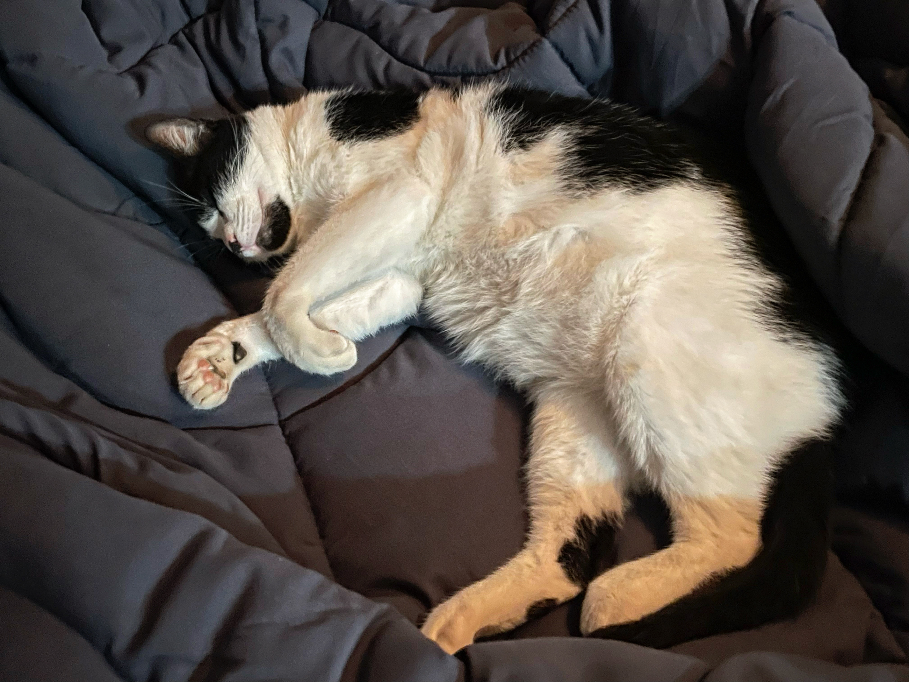

Clarita

Clarita
Adopt ClaritaAge: 3 years
Breed: Domestic Shorthair
Description: Clarita is a sweet and gentle cat who loves to lounge in sunny spots and cuddle with her humans. She has a striking black-and-white coat and a calm demeanor that makes her perfect for any home. She enjoys lounging in sunny spots and playing with feather toys. Her ideal home would be one with loving owners who pamper her regularly.